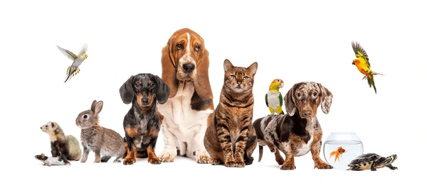
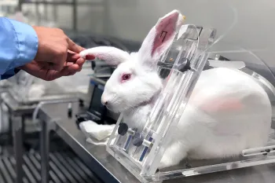
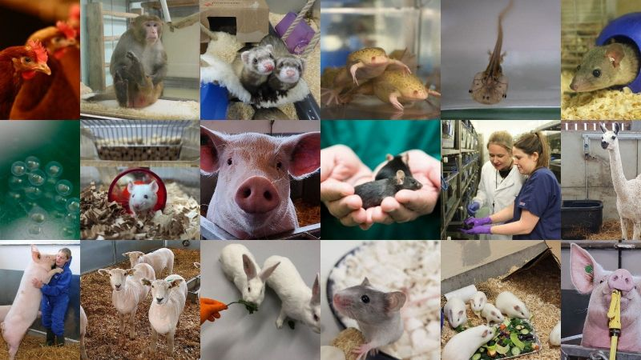
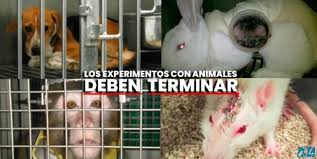
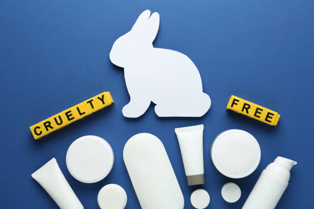
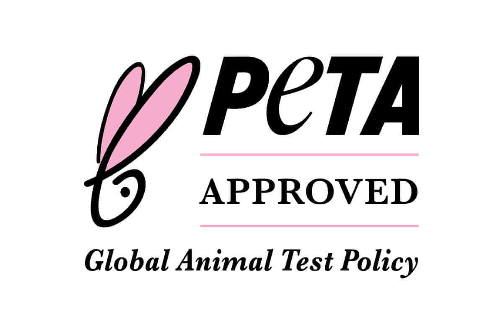
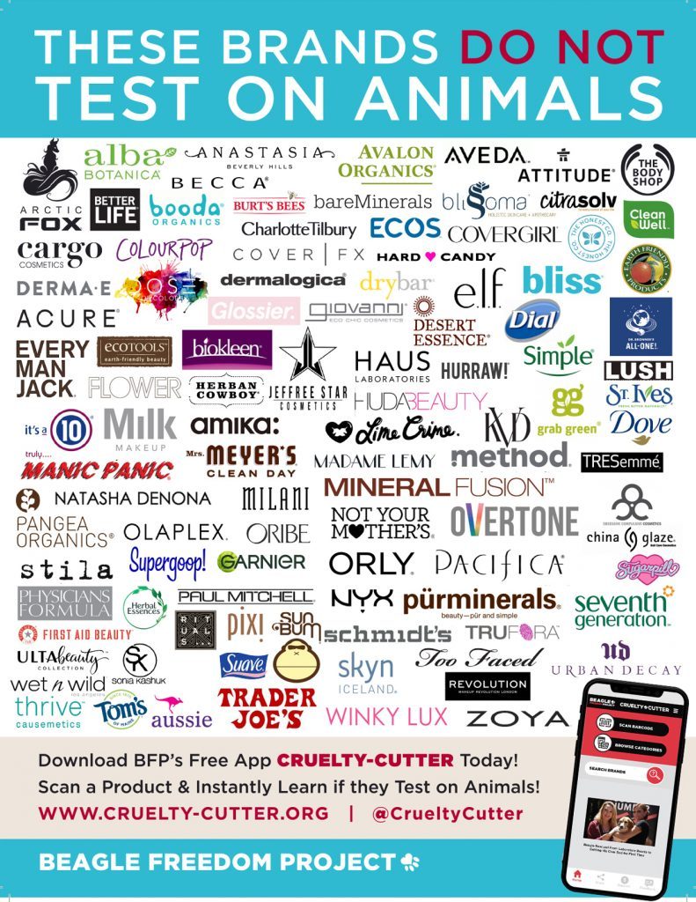
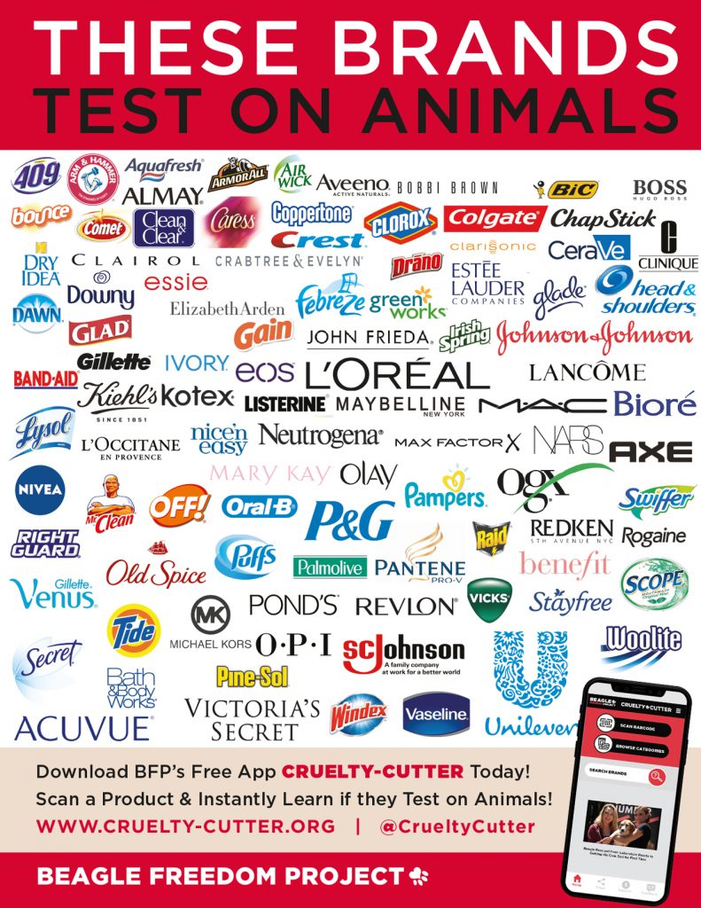

Introducción

Los animales no merecen ser utilizados en experimentos. Los testeos en animales son pruebas del pasado. Es tiempo de priorizar alternativas que son seguras, más rápidas y más seguras para los humanos, sin causarles sufrimiento a los animales.
¿Qué son los testeos en animales?

Un testeo en animal es cualquier experimento científico o prueba en el que un animal vivo es obligado a pasar sobre dolor, sufrimiento, angustia, ansiedad y la muerte.
Un testeo en animales no es como llevar a tu mascota al veterinario. Los Animales utilizados en laboratorios son lastimados, no por su propio bien y usualmente matados al final del experimento.
¿Cuáles son los animales utilizados?

Los animales utilizados en experimentos incluyen: babuinos, gatos, vacas, perros, hurónes, pescados, sapos, chanchos de india, hámsters, caballos, llamas, ratones, monos, búhos, chanchos, codornices, conejos, ratas y ovejas.
Tipos de testeos en animales

No hay ningún límite en el dolor y sufrimiento que puede ser inflijido en animales durante los experimentos. En algunas instancias, los animales no reciben ningún tipo de medicación para aliviar su sufrimiento o angustia durante o después del experimento con la excusa de que podría afectar el experimento.
Estos experimentos incluyen:
-
Prueba Draize:
Una sustancia es colocada en un ojo del conejo, con el otro sirviendo de control. Los conejos son contenidos, preveniendo que ellos respondan naturalmente a la irritación, y sus ojos son evaluados en un intervalo de hasta 14 días. -
Prueba de Irritación de la piel:
Ésta evalúa el potencial de una sustancia a cusar daños en la piel, incluyendo picazón, hinchazón e inflamación. Esa prueba es usualmente hecha en conejos e implica colocar un quimico en una parte de la piel previamente depilada y otro igual para controlar. -
Prueba de Ecotoxicidad:
Las pruebas de Ecotoxicidad son utilizadas para analizar el potencial negativo de los químicos en el Medio Ambiente, usando pescados. -
Pruebas Cancerígenas:
En esta prueba, un químico es administrado oralmente,colocado sobre la piel, o inhalado sobre un tiempo prolongado a ratones o ratas. Después de que el estudio está completo, los animales son asesinados y sus tejidos y órganos son examinados para evidencia de cancer. -
Madres ausentes:
Les quitan a los Monos sus madres desde que son crías para estudiar como el estrés extremo puede afecar al comportamiento humano. -
Prueba de movimiento de extremidades humanas:
Los Gatos tienen su médula espinal dañada y son forzados a correr en cintas para estudiar como la actividad neuronal puede afectar el movimiento de extremidades humanas. -
Prueba de función de órganos:
Los perros tienen sus corazones, pulmones y riñones dañados o removidos para estudiar cómo las sustancias experimentales pueden afectar el funcionamiento de los órganos huanos.
“Los animales tienen corazones que sienten, ojos que ven y familias que cuidar, como tú y yo.”
Vida en Laboratorios

Los Animales en los laboratorios tipicamente deben ver (u oir) el sufrimiento de otros animales sufriendo, incluyendo sus propios padres, hermanos o bebés. Altos niveles de estrés constante puede causar comportamientos antinaturales. Por ejemplo, no es común que que los monos se mutilen ellos mismos o mecerse o vocalizar constantemente como una forma de aliviar su ansieda; los ratones se lamen hasta el punto de quedar completamente calvos y los perros a entrar en agonía.
Mira un incómodo video de 60 segundos para prevenir una vida condenada hacia ellos.
¿Cómo podemos frenar esto?
Cada día, tienes la opción de votar por el futuro de la ciencia y compasión. Rechaza la idea de continuar con este sufrimiento. Edúcate a ti y a los que te rodean. Firma peticiones que baneen esto y apoya organizaciones dedicadas a remplazar animales con métodos de prueba avanzados, relevantes para los humanos.
Pero la opción más constante y poderosa es sencilla: Elige productos Cruelty-Free.
“Podemos juzgar el corazón de un hombre por cómo trata a los animales.”
Cruelty Free

Cruelty Free se traduce como Libre de Crueldad, y es normalmente utilizado en cosméticos como parte del esfuerzo de los que estan intentando ser más concientes sobre el tratado de los animales.
Se refiere cuando ningún daño es hecho hacia animales en ninguna etapa del desarrollo de un producto cosmético o sus componentes.
Las marcas Libres de Crueldad no testean en animales, así que puedes estar seguro de que ese producto no va a causar sufrimiento.
Así como la naturaleza ética, Cruelty-Free está respaldado por la ciencia como una forma efectiva de cosméticos. Estos productos no contienen ningún ingrediente que haya sido testeado en animales, y son normalmente hechos sin productos de animales. Son usualmente veganos y orgánicos, asegurando que no contribuyan a la crueldad animal.
Marcas Cruelty Free

PETA
PETA (Personas para el Tratado Ético de Animales) es una organización global de los derechos de animales que se opone al uso de animales para el beneficio humano, en áreas como laboratorios, comida, ropa, y entretenimiento.
La última lista libre de crueldad de PETA es el único programa internacional que no permite pruebas en animales por culaquier razón en el mundo. Incluye companías y marcas que han verificado que ellos ni sus ingredientes conducen, comisionan, pagan, o permiten cualquier prueba en animales para ingredientes, formulaciones o productos termminados, en ninguna parte del mundo y que no lo harán en el futuro
¿Cómo identificar estos productos?
Para identificar un producto curelty free, busca logotipos de certificación establecidos en el empaquetado, como el conejo o PETA (Belleza sin conejos).

O chequea la última lista libre de crueldad de PETA.
Algunas marcas libres de crueldad son:

Marcas que SI testean en animales son:
